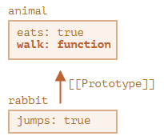

The easiest way to create an object is to use an object literal. Simply put, it's a comma separated list
of name:value pairs,
enclosed within curly braces. Some examples:
newThe new operator creates and initializes a new object. The new keyword must be followed by a
function invocation. A function used in this
way is called a constructor. JavaScript includes constructors for its own built-in types:
In JavaScript, objects have a special hidden property [[Prototype]] (as named in the specification), that is either null or references another object. That object is called “a prototype”:
When we read a property from object, and it’s missing, JavaScript automatically takes it from the prototype. In programming, this is called “prototypal inheritance”. And soon we’ll study many examples of such inheritance, as well as cooler language features built upon it.
The property [[Prototype]] is internal and hidden, but there are many ways to set it.
One of them is to use the special name __proto__, like this:
Now if we read a property from rabbit, and it’s missing, JavaScript will automatically take it from animal.
For instance:
Here the line (*) sets animal to be the prototype of rabbit.
Then, when alert tries to read property rabbit.eats (**), it’s not in rabbit, so JavaScript follows the
[[Prototype]] reference and finds it in animal (look from the bottom up):
Here we can say that “animal is the prototype of rabbit” or “rabbit prototypically inherits from animal”.
So if animal has a lot of useful properties and methods, then they become automatically available in rabbit. Such properties are called “inherited”.
If we have a method in animal, it can be called on rabbit:
The method is automatically taken from the prototype, like this:
The prototype chain can be longer:
Now if we read something from longEar, and it’s missing, JavaScript will look for it in rabbit, and then in animal.
There are only two limitations:
__proto__ is a historical getter/setter for [[Prototype]]
It’s a common mistake of novice developers not to know the difference between these two.
Please note that __proto__ is not the same as the internal [[Prototype]] property. It’s a getter/setter for [[Prototype]]. Later we’ll see situations where it matters, for now let’s just keep it in mind, as we build our understanding of JavaScript language.
The __proto__ property is a bit outdated. It exists for historical reasons, modern JavaScript suggests that we should use Object.getPrototypeOf/Object.setPrototypeOf functions instead that get/set the prototype. We’ll also cover these functions later.
By the specification, __proto__ must only be supported by browsers. In fact though, all environments including server-side support __proto__, so we’re quite safe using it.
As the __proto__ notation is a bit more intuitively obvious, we use it in the examples.
I'll start with the most startling observation (for me); objects in JavaScript are very different in form to objects in Java. Prior to learning JavaScript my understanding of an object was it represented an instantiated class, where a class represented a blueprint of a given object type. The class would define methods (functions) to access its member variables; methods would effectively act as the public access point to modify member variables. This is not what a JavaScript object is; it is more akin to a data dictionary in Python, where it uses key: value pairs to define object properties. So an object that represents a user, would look something like:
Functions can be set as properties of an object. When they are, they are referred to as a methods. Methods are studied in the next chapter.
Objects are associative arrays with several special features.
They store properties (key-value pairs), where:
To access a property, we can use:
obj.property.obj["property"]. Square brackets allow taking the key from a
variable, like obj[varWithKey].Additional operators:
delete obj.prop."key" in obj.for (let key in obj) loop.What we’ve studied in this chapter is called a “plain object”, or just Object. There are many other kinds of objects in JavaScript:
They have their special features that we’ll study later. Sometimes people say something like “Array type” or “Date type”, but formally they are not types of their own, but belong to a single “object” data type. And they extend it in various ways.
Objects in JavaScript are very powerful. Here we’ve just scratched the surface of a topic that is really huge. We’ll be closely working with objects and learning more about them in further parts of the tutorial.
importance: 5
Write the code, one line for each action:
importance: 5
Write the function isEmpty(obj) which returns true if the object has no properties,
false
otherwise.
Should work like this when called upon:
importance: 5
We have an object storing salaries of our team:
Write the code to sum all salaries and store in the variable sum. Should be 390 in the example above.
If salaries is empty, then the result must be 0.
importance: 3
Create a function multiplyNumeric(obj) that multiplies all numeric property values of
obj by 2.
For instance:
Please note that multiplyNumeric does not need to return anything. It should modify the object in-place.
P.S. Use typeof to check for a number here.